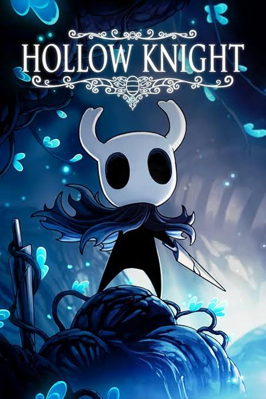
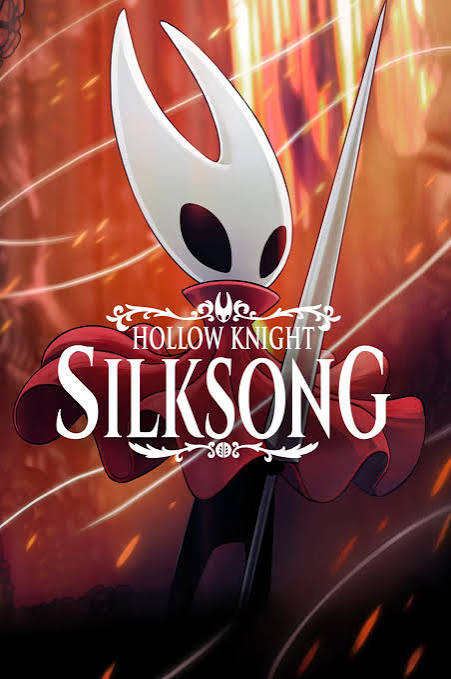
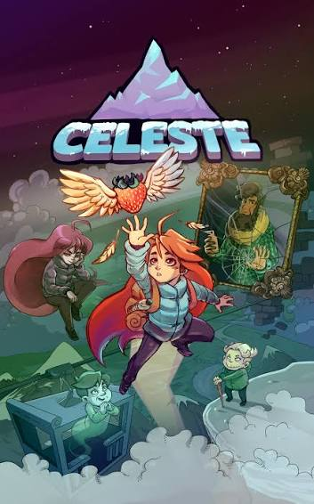
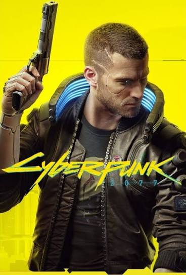
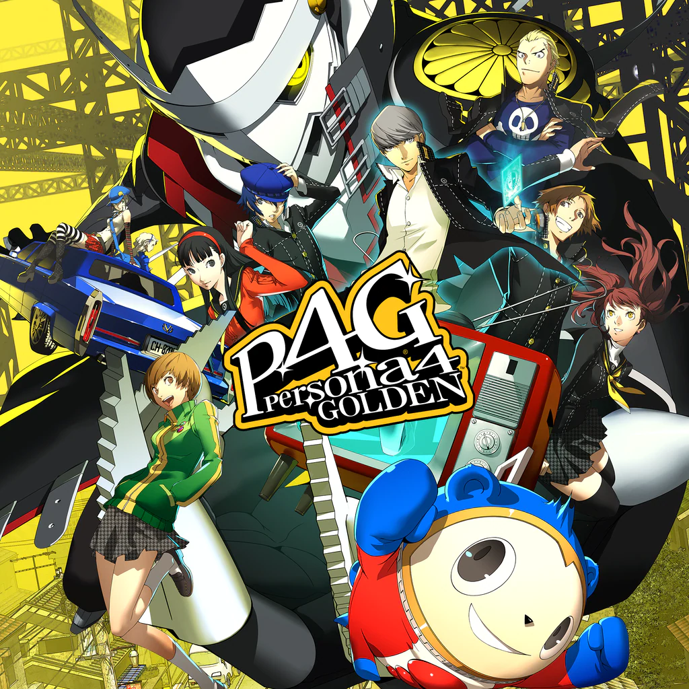
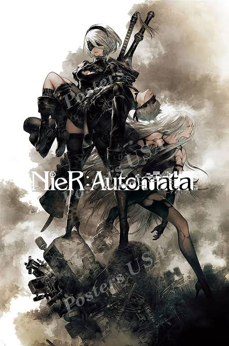
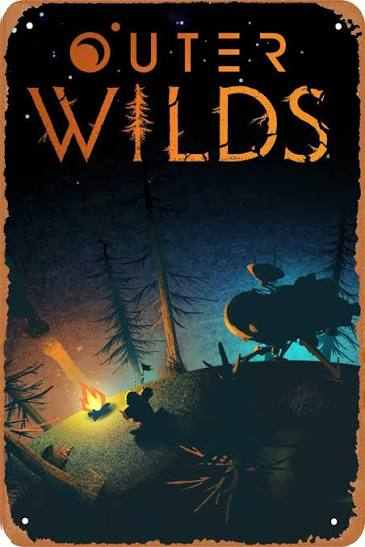
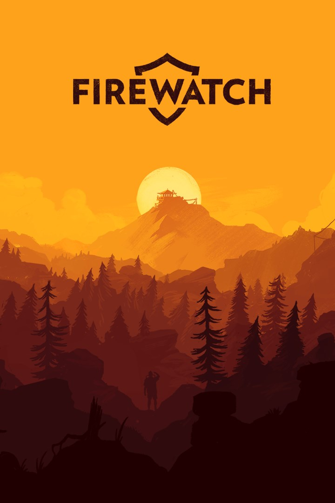

Moje gry
Moje ulubione tytuły. Wybierz gatunek, żeby zawęzić listę.

Hollow Knight
Klasyczna metroidvania. Niezapominalny soundtrack, artstyle i bossy. Klasyka wśród gier indie

Hollow Knight: Silksong
Sequel do Hollow Knighta. Większy, bardziej rozbudowany, więcej detali. Trudno wybrać, która wersja jest rzeczywiście lepsza, ale jeżeli lubisz oryginał, sequel na pewno nie zawodzi

Celeste
Najbardziej wymagająca gra na liście, ale też jedna z bardziej satysfakcjonujących. Soundtrack 8-bit, grafika pixelowa budują super klimat. Jeden z bardziej rozbudowanych systemów movementu wśród platformówek 2d i zaskakująco dotykająca historia

Wuthering Waves
Gra gacha, co może wielu zniechęcić. Pod tym skrywa się jednak świat z niesamowicie głęboką historią, wieloma niesamowitymi postaciami, bardzo rozbudowany, systemem walki i budowania postaci, pięknymi grafikami i soundtrackiem. A co najlepsze? Gra jest live-service więc dostaje regularnie nowe updaty i kontent. Jeżeli szukasz gry w której zawsze będzie co robić, to jest gra dla ciebie

Cyberpunk 2077
Chyba nie trzeba nikomu przedstawiać, ale zdecydowanie mój ulubiony open world. Eksploracja Night City nigdy się nie nudzi, side questy klasycznie w stylu CDPR dodają światu niesamowitej głębi, a historia serio zostawia wrażenie. W night city nie ma szczęśliwych zakończeń

Persona 4 Golden
Jrpg od firmy Atlus. Najlepszy zbiór postaci na tej liście. Gra jest długa ale godziny w niej wydają sie jak minuty. Tutaj możnaby tak naprawdę dać którąkolwiek persone, wszystkie są super

NieR:Automata
Gra która chyba najlepiej integruje gameplay z historią, którą opowiada. Zagrasz w to i uznasz, że właśnie tak powinno się wykorzystywać możliwośći jakie dają gry komputerowe

Outer Wilds
Gra o której ciężko coś powiedzieć bez zaspoilerowania. Gre da się skończyć tak na prawdę od razu po odpaleniu i na tym polega jej piękno. Jedyne co cie ogranicza to twoja wiedza, którą zdobywasz przez eksplorowanie świata

Firewatch
Najbardziej klimatyczna gra na liście, krótka ale przez cały czas będziesz w napięciu. Mistrzostwo pod względem narracyjnym